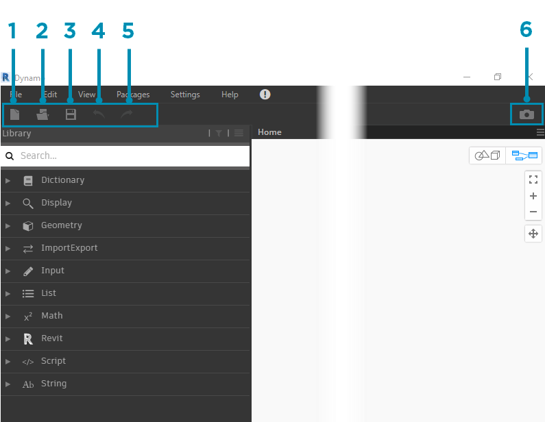
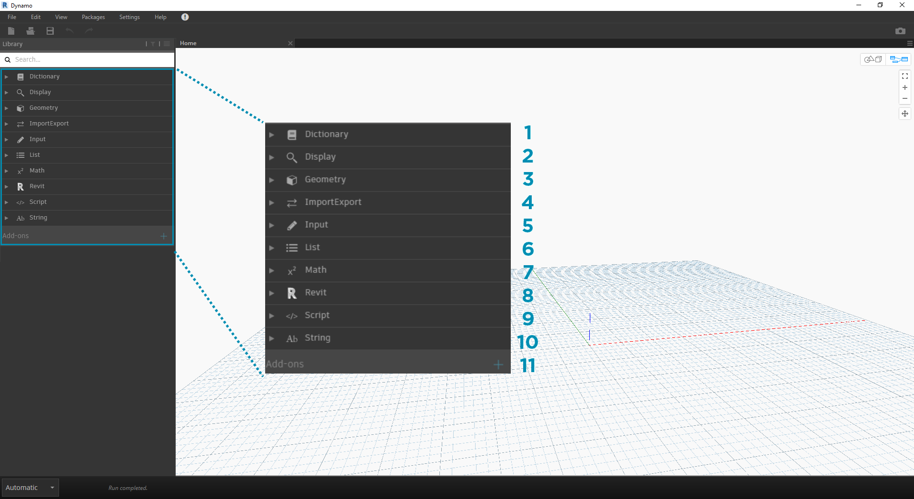
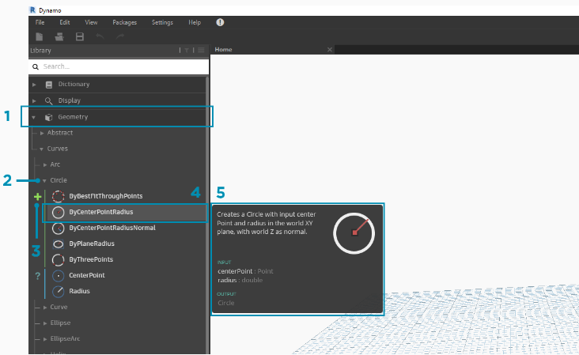
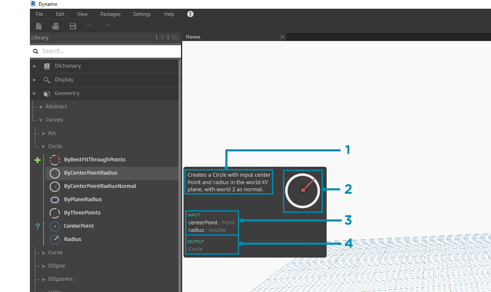

The Dynamo User Interface
The User Interface (UI) for Dynamo is organized into five main regions, the largest of which is the workspace where we compose our visual programs.

- Menus
- Toolbar
- Library
- Workspace
- Execution Bar
Let's dive deeper into the UI and explore the functionality of each region.
Menus
The Dropdown Menus are a great place to find some of the basic functionality of the Dynamo application. Like most Windows software, actions related to managing files and operations for selection and content editing are found in the first two menus. The remaining menus are more specific to Dynamo.

- File
- Edit
- View
- Packages
- Settings
- Help
- Notifications
Toolbar
Dynamo's Toolbar contains a series of buttons for quick access to working with files as well as Undo [Ctrl + Z] and Redo [Ctrl + Y] commands. On the far right is another button that will export a snapshot of the workspace, which is extremely useful for documentation and sharing.

- New - Create a new .dyn file
- Open - Open an existing .dyn (workspace) or .dyf (custom node) file
- Save/Save As - Save your active .dyn or .dyf file
- Undo - Undo your last action
- Redo - Redo the next action
- Export Workspace as Image - Export the visible workspace as a PNG file
Library
The Library contains all of the loaded Nodes, including the default Nodes that come with the installation as well as any additionally loaded Custom Nodes or Packages. The Nodes in the Library are organized hierarchically within libraries, categories, and, where appropriate, sub-categories based on whether the Nodes Create data, execute an Action, or Query data.
Browsing
By default, the Library will contain eight categories of Nodes. Core and Geometry are great menus to begin exploring as they contain the largest quantity of Nodes. Browsing through these categories is the fastest way to understand the hierarchy of what we can add to our Workspace and the best way to discover new Nodes you haven't used before.
We will focus on the default collection of Nodes now, but note that we will extend this Library with Custom Nodes, additional libraries, and the Package Manager later.

- Dictionary
- Display
- Geometry
- ImportExport
- Input
- List
- Matches
- Revit
- Script
- String
- Add-ons
Browse the Library by clicking through the menus. Click the Geometry > Curves > Circle. Note the new portion of the menu that is revealed and specifically the Create and Query Labels.

- Library
- Category
- Subcategory: Create/Actions/Query
- Node
- Node Description and properties - this appears when hovering over the node icon.
From the same Circle menu, hover your mouse over ByCenterPointRadius. The window reveals more detailed information about the Node beyond its name and icon. This offers us a quick way to understand what the Node does, what it will require for inputs, and what it will give as an output.

- Description - plain language description of the Node
- Icon - larger version of the icon in the Library Menu
- Input(s) - name, data type, and data structure
- Output(s) - data type and structure
Searching
If you know with relative specificity which Node you want to add to your Workspace, the Search field is your best friend. When you are not editing settings or specifying values in the Workspace, the cursor is always present in this field. If you start typing, the Dynamo Library will reveal a selected best fit match (with breadcrumbs for where it can be found in the Node categories) and a list of alternate matches to the search. When you hit Enter, or click on the item in the truncated browser, the highlighted Node is added to the center of the Workspace.

- Search Field
- Best Fit Result / Selected
- Alternate Matches
Settings
From geometric to user settings, these options can be found in the Settings menu. Here you can opt in or out for sharing your user data to improve Dynamo as well as define the application's decimal point precision and geometry render quality.

- Enabling Reporting - Options for sharing user data to improve Dynamo.
- Show Run Preview - Preview the execution state of your graph. Nodes scheduled for execution will be highlighted in your graph.
- Number Format Options - Change the document settings for decimals.
- Render Precision - Raise or lower the document render quality.
- Geometry Scaling - Select range of geometry you are working on.
- Isolate Selected Geometry - Isolated background geometry based on your node selection.
- Show/Hide Geometry Edges - Toggle 3D geometry edges.
- Show/Hide Preview Bubbles - Toggle data preview bubbles below nodes.
- Manage Node and Package Paths - Manage file paths to make nodes and packages show up in the Library.
- Enabling Experimental Features - Use beta features new in Dynamo.
Help
If you're stuck, check out the Help Menu. Here you can find the sample files that come with your installation as well as access one of the Dynamo reference websites through your internet browser. If you need to, check the version of Dynamo installed and whether it is up to date through the About option.

- Getting Started - A brief introduction to using Dynamo.
- Samples - Reference example files.
- Open Dynamo Dictionary - Resource with documentation on all nodes.
- Report A Bug - Open an Issue on GitHub.
- Go To Project Website - View the Dynamo Project on GitHub.
- Go To Project Wiki - Visit the wiki for learning about development using the Dynamo API, supporting libraries and tools.
- Display Start Page - Return to the Dynamo start page when within a document.
- About - Dynamo Version data.